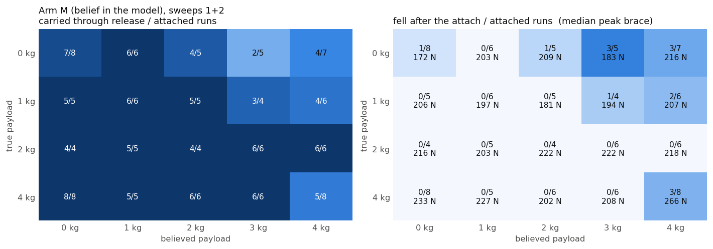
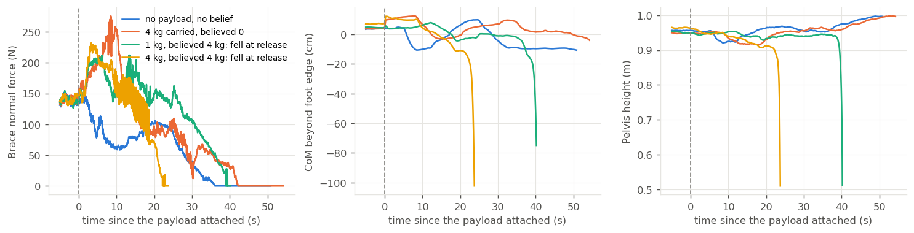
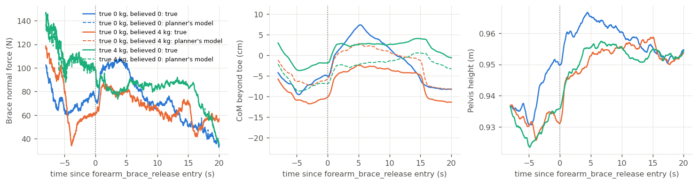
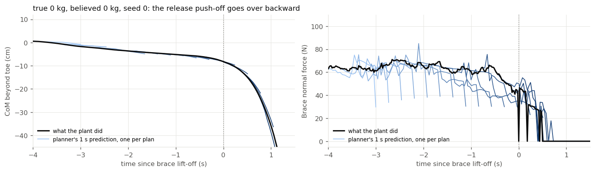

<title>Payload belief on the braced retrieval carry</title>
<link rel="preconnect" href="https://fonts.googleapis.com">
<link rel="stylesheet" href="https://fonts.googleapis.com/css2?family=Source+Serif+4:opsz,wght@8..60,400;8..60,600&family=Source+Sans+3:wght@400;600&family=JetBrains+Mono:wght@400;500&display=swap">
<style>
:root {
  color-scheme: light;
  --bg: #fbfbf9; --ink: #16171a; --ink-2: #4f5359; --muted: #7c8086;
  --rule: #dedfe2; --accent: #2a78d6; --accent-soft: #e8f0fb; --surface-2: #f2f3f1;
  --code-bg: #eff0ee; --warn: #b4560e;
  --serif: "Source Serif 4", Georgia, "Times New Roman", serif;
  --sans: "Source Sans 3", system-ui, -apple-system, "Segoe UI", sans-serif;
  --mono: "JetBrains Mono", ui-monospace, "SF Mono", Menlo, monospace;
}
@media (prefers-color-scheme: dark) {
  :root:not([data-theme="light"]) {
    color-scheme: dark;
    --bg: #17181b; --ink: #ebebe8; --ink-2: #b3b6bb; --muted: #83878d;
    --rule: #34373c; --accent: #3987e5; --accent-soft: #1d2a3d; --surface-2: #202226;
    --code-bg: #202226; --warn: #e08a3c;
  }
}
:root[data-theme="dark"] {
  color-scheme: dark;
  --bg: #17181b; --ink: #ebebe8; --ink-2: #b3b6bb; --muted: #83878d;
  --rule: #34373c; --accent: #3987e5; --accent-soft: #1d2a3d; --surface-2: #202226;
  --code-bg: #202226; --warn: #e08a3c;
}
body { background: var(--bg); color: var(--ink); font-family: var(--sans); font-size: 16px; line-height: 1.55; margin: 0; }
main { max-width: 980px; margin: 0 auto; padding: 40px 24px 96px; }
.text { max-width: 72ch; }
h1 { font-family: var(--serif); font-weight: 600; font-size: 2rem; line-height: 1.2; margin: 0 0 8px; text-wrap: balance; letter-spacing: -0.005em; }
h2 { font-family: var(--serif); font-weight: 600; font-size: 1.35rem; margin: 48px 0 12px; text-wrap: balance; }
h3 { font-family: var(--sans); font-weight: 600; font-size: 1rem; margin: 28px 0 8px; }
p { margin: 0 0 14px; }
.meta { color: var(--ink-2); font-size: 0.92rem; display: flex; flex-wrap: wrap; gap: 6px 22px; margin: 0 0 32px; padding-bottom: 16px; border-bottom: 1px solid var(--rule); }
.meta span b { font-weight: 600; color: var(--ink); }
.eyebrow { font-family: var(--sans); text-transform: uppercase; letter-spacing: 0.08em; font-size: 0.75rem; color: var(--muted); margin: 0 0 6px; }
code, .mono { font-family: var(--mono); font-size: 0.86em; }
code { background: var(--code-bg); padding: 1px 5px; border-radius: 3px; }
pre { background: var(--code-bg); padding: 12px 14px; border-radius: 4px; overflow-x: auto; font-size: 0.82rem; line-height: 1.45; }
pre code { background: none; padding: 0; }
a { color: var(--accent); text-decoration: none; border-bottom: 1px solid color-mix(in srgb, var(--accent) 35%, transparent); }
a:hover, a:focus-visible { border-bottom-color: var(--accent); outline: none; }
a:focus-visible { outline: 2px solid var(--accent); outline-offset: 2px; }
.tablewrap { overflow-x: auto; margin: 12px 0 20px; }
table { border-collapse: collapse; width: 100%; font-size: 0.9rem; font-variant-numeric: tabular-nums; }
th, td { text-align: left; vertical-align: top; padding: 7px 10px; border-bottom: 1px solid var(--rule); }
th { font-weight: 600; color: var(--ink-2); background: var(--surface-2); font-size: 0.84rem; }
td.num, th.num { text-align: right; }
figure { margin: 20px 0 28px; width: 980px; max-width: calc(100vw - 48px); }
figure img { max-width: 100%; height: auto; display: block; border: 1px solid var(--rule); border-radius: 3px; background: #fcfcfb; }
figcaption { font-size: 0.88rem; color: var(--ink-2); margin-top: 8px; max-width: 80ch; }
.finding { border-left: 3px solid var(--accent); padding: 4px 0 4px 16px; margin: 16px 0 20px; background: var(--accent-soft); border-radius: 0 4px 4px 0; }
.finding p:last-child { margin-bottom: 0; }
ol.program { padding-left: 1.4em; }
ol.program li { margin-bottom: 12px; }
ul.todo { padding-left: 1.2em; }
ul.todo li { margin-bottom: 8px; }
.small { font-size: 0.88rem; color: var(--ink-2); }
.kv { display: grid; grid-template-columns: max-content 1fr; gap: 4px 18px; font-size: 0.92rem; margin: 8px 0 16px; }
.kv div:nth-child(odd) { color: var(--muted); }
hr { border: 0; border-top: 1px solid var(--rule); margin: 40px 0; }
@media (prefers-reduced-motion: reduce) { * { scroll-behavior: auto; } }
</style>
<main>
<p class="eyebrow">Experiment page · GOLEM / lean task · 2026-09-14; 2026-09-15: release mechanism, six seeds, the 3 kg belief</p>
<h1>Payload belief on the braced retrieval carry</h1>
<div class="meta">
  <span><b>Author</b> Claude Code for W. Xie</span>
  <span><b>Branch</b> <span class="mono">mujoco_mpc @ wxie/brace-payload</span></span>
  <span><b>Code</b> <span class="mono">mujoco_mpc/studies/brace_payload/</span></span>
  <span><b>Page</b> <span class="mono">mujoco_mpc/docs/brace_payload/20260914-brace_payload_belief.html</span></span>
  <span><b>Companion</b> <a href="../wrench_prior/20260914-wrench_prior_direction.html">Wrench prompting as a physical-parameter prior</a></span>
</div>

<div class="text">
<h2>Result</h2>
<p>Over 169 runs that reached the attach (two sweeps, six seeds on the model-only arm, believed payload 0–4 kg against true payload 0–4 kg), the H1-2 never fell when it believed the payload lighter than it was (0/59) and never when its belief was 1 kg too heavy (0/25). It fell in 3 of 22 runs with a belief 2 kg too heavy, 7 of 15 with 3 kg too heavy and 3 of 10 with 4 kg too heavy; with the correct belief it fell in 5 of 38, four of them carrying 4 kg. By belief column: 0, 1, 2 kg believed 2/101, 3 kg 5/29, 4 kg 11/39 (Fisher exact, 4 kg against 0–2 kg, p = 1×10<sup>−5</sup>; 3 kg against 0–2 kg, p = 0.006). A 4 kg true payload carried under a 0 kg belief went through 11 times in 11, with the brace taking up to 291 N; under the correct 4 kg belief, 7 of 11. Every one of the 18 falls after the attach is a backward fall as the brace unloads: 13 at the release rung, 2 in the first standback rung after it, and 3 earlier, at the retract and tuck rungs, all three with a belief 3–4 kg too heavy on an empty hand. Preloading the brace by 2·m̂·g made no difference.</p>
<p>The twelve instrumented runs (section below) show where the belief enters: a 4 kg belief moves the centre of mass the planner computes 5 cm ahead of the true one and leaves the brace force it computes within a few newtons of the truth, so the planner regulates a believed centre of mass and parks the true one 5 cm nearer the heels for the whole carry, 1.25 cm per kilogram of over-belief. The release rung falls with a correct model too (2 of 11 instrumented runs), so the belief moves the start of the push-off toward a failure the rung already has, at a rate of 2 in 101 with a correct-or-low belief.</p>
<p>The same sign came out of the UR5 push study on the companion page and out of the Ramos group's VLM mass estimates (+73%, +77% on two of three objects, arXiv 2508.09846). A calibrated interval from a VLM should be consumed at its low end on this ladder; the interval baseline (scenario MPC over {0, 2, 4} kg) is running and will be added below.</p>

<h2>Setup</h2>
<p>Headless <span class="mono">lean_bench</span>, deploy joint gains, iCEM at 33 plans/s (<span class="mono">--spp 15</span>), 6 rollout threads, seeds 0–2 with the 3 mm start perturbation. Strategy slot 11 is a byte-copy of strategy 27 (braced retrieval: approach, hover, descend, grasp, post-grasp, lift-back, retract, tuck, release, four standback rungs, stand) with <span class="mono">timeout_advance</span> on rungs 2–8. That flag is needed because in the bench rung 8 (tuck) misses its 8 cm tolerance, the time-limit path resets the ladder to <span class="mono">stand_up</span> from the braced pose, and the robot falls backward (seed 0, t = 83 s); with the advance the no-payload ladder completes at 114 s. The bench has no gripper joints, so the grasp is the straddle strategy 27 already assumes.</p>
<p>The payload is a point mass on <span class="mono">right_magpie_gripper</span>. The plant gets the true mass at rung 5 (the first rung after the grasp close), ramped over 0.3 s as the object leaves the table; the planner's model gets the believed mass at once. Arm P also adds 2·m̂·g to every brace-force target from rung 5 to 8 (<span class="mono">brace_force_target_add</span>, cleared at release); arm M changes the model only. Grid: true {0, 1, 2, 4} kg × believed {0, 1, 2, 4} kg × 3 seeds × 2 arms = 96 runs, median 199 s each, 2.4 h at two jobs. A run counts as <b>carried</b> if it reached the first standback rung without the pelvis dropping below 0.5 m; four runs reached standback and ran out of the 130 s budget before the final stand, and are counted as carried.</p>
<p>Sweep 2 (2026-09-15) added seeds 3–5 on arm M over the full grid with a believed-3 kg column (60 runs), the believed-3 kg column on seeds 0–2 for both arms (24 runs), and the twelve instrumented runs of the mechanism section, which are arm M with a passive dump and are pooled with it. Every job ran through the resource guard (<span class="mono">~/.claude/bin/resguard.sh run</span>: systemd scope, 5 GB and 700% caps, a watchdog on MemAvailable) at two jobs, after the box rebooted under a third process on the first attempt.</p>
<p>Twenty-three of the 192 runs fell before the payload attached, during the stand (t = 3–5 s) or the approach (t = 17–23 s), with the payload code inactive. That is the ladder's own floor at this plan rate, 12% here, and is reported separately; every grid below is over the runs that reached the attach.</p>
</div>

<figure><figcaption>Arm M (belief in the model only) pooled over both sweeps and the instrumented runs, up to eight runs per cell. Left: runs carried through the release over runs that reached the attach. Right: runs that fell after the attach, with the median peak brace normal force during the carry. The falls sit above the diagonal by two or more kilograms and in the correct-belief 4 kg cell. Arm P (sweep 1 plus the 3 kg column, three seeds) is in the table below and in <span class="mono">fig_payload_grid.png</span>.</figcaption></figure>

<div class="text">
<h2>What the falls look like</h2>
<p>Thirteen of the 18 post-attach falls happen 2–16 s into <span class="mono">forearm_brace_release</span>, two in the first standback rung after it, and three (all with a belief 3–4 kg too heavy on an empty hand) at the retract and tuck rungs, where the arm first comes back and the brace first unloads. The shape is the same each time: the brace unloads from 40–160 N to zero within 1–3 s, the centre of mass moves from 5–10 cm behind the toe to 20, 30 and then 70 cm behind it, and the reaching hand swings from x = 0.6 m to −0.1 m as the body goes over backward. In the 4 kg carry with a 0 kg belief the release rung keeps the centre of mass between 0.6 cm behind and 9.5 cm ahead of the toe, the tilt under 25° and the brace under 110 N. The mechanism section below has the instrumented version: the over-belief parks the true centre of mass nearer the heels for the whole carry, and the push-off that starts from there goes over.</p>
</div>
<figure><figcaption>Brace normal force, centre of mass beyond the foot edge (negative = behind), and pelvis height from 5 s before the attach. Blue: no payload. Orange: 4 kg carried with a 0 kg belief; the brace peaks near 275 N and the centre of mass stays ahead of the foot edge. Green: 1 kg believed 4 kg, falls at 40 s. Yellow: 4 kg believed 4 kg, falls at 24 s. Both falls go backward as the brace unloads.</figcaption></figure>

<div class="text">
<h2>Numbers</h2>
</div>
<div class="tablewrap"><table>
<tr><th>Pooled over both arms and both sweeps, runs that reached the attach</th><th class="num">fell</th><th class="num">carried</th><th class="num">median peak brace</th></tr>
<tr><td>belief below the truth</td><td class="num">0 / 59</td><td class="num">59 / 59</td><td class="num">220 N</td></tr>
<tr><td>belief equal to the truth</td><td class="num">5 / 38</td><td class="num">33 / 38</td><td class="num">222 N</td></tr>
<tr><td>belief above the truth</td><td class="num">13 / 72</td><td class="num">59 / 72</td><td class="num">211 N</td></tr>
<tr><td>belief 1 kg above the truth</td><td class="num">0 / 25</td><td class="num">25 / 25</td><td class="num">204 N</td></tr>
<tr><td>belief 2 kg above the truth</td><td class="num">3 / 22</td><td class="num">19 / 22</td><td class="num">216 N</td></tr>
<tr><td>belief 3 kg above the truth</td><td class="num">7 / 15</td><td class="num">8 / 15</td><td class="num">215 N</td></tr>
<tr><td>belief 4 kg above the truth</td><td class="num">3 / 10</td><td class="num">7 / 10</td><td class="num">222 N</td></tr>
<tr><td>believed 0 kg (any truth)</td><td class="num">1 / 37</td><td class="num">36 / 37</td><td class="num">213 N</td></tr>
<tr><td>believed 1 kg</td><td class="num">0 / 33</td><td class="num">33 / 33</td><td class="num">207 N</td></tr>
<tr><td>believed 2 kg</td><td class="num">1 / 31</td><td class="num">30 / 31</td><td class="num">209 N</td></tr>
<tr><td>believed 3 kg</td><td class="num">5 / 29</td><td class="num">24 / 29</td><td class="num">220 N</td></tr>
<tr><td>believed 4 kg</td><td class="num">11 / 39</td><td class="num">28 / 39</td><td class="num">233 N</td></tr>
<tr><td>true 4 kg, believed 0 kg</td><td class="num">0 / 11</td><td class="num">11 / 11</td><td class="num">235 N</td></tr>
<tr><td>true 4 kg, believed 4 kg</td><td class="num">4 / 11</td><td class="num">7 / 11</td><td class="num">262 N</td></tr>
<tr><td>pre-attach falls (stand / approach, payload code inactive)</td><td class="num">23 / 192</td><td class="num">—</td><td class="num">—</td></tr>
</table></div>
<div class="text">
<p>The preload works as a preload: with nothing in the hand, the median peak brace force during the carry rises 159, 198, 209, 228 N as the belief goes 0, 1, 2, 4 kg in arm P. It changes nothing about the falls (3/12 against 8/27 at the 4 kg belief, 1/8 against 4/21 at 3 kg). The correct-belief falls are a 4 kg effect: 4 of the 5 are in the true-4 kg, believed-4 kg cell, where the carry peaks at 262 N and the release starts from the heaviest load on the arm; the same 4 kg carried under a 0 kg belief starts its release 5 cm nearer the toe and went through 11 times in 11.</p>

<h2>The release mechanism (2026-09-15)</h2>
<p>Twelve more runs, arm D: true {0, 4} kg × believed {0, 4} kg × seeds 0–2 (<span class="mono">runs/sweep2</span>), with two additions to the bench. Every log row now carries the plant's state evaluated on the planner's model (<span class="mono">com_edge_belief</span>, <span class="mono">brace_belief</span>: same qpos and qvel, forward dynamics on the planner's copy), and after every plan iteration from rung 8 on the planner's nominal trajectory is written out (<span class="mono">--plan_out</span>), every fifth step of its 1 s horizon, evaluated on both models. Eleven runs reached the attach (seed 2 of true 0 / believed 4 fell during the approach).</p>
<p>The belief acts through the centre of mass and nowhere else. With 4 kg believed and none carried, the upper-body centre of mass the planner computes sits 4.1–5.7 cm ahead of the true one from the attach to the release (mean 5.0 and 5.1 cm over the two carries); with 4 kg carried and 0 believed it sits 5 cm behind (means −4.9 to −5.1 cm). The brace force the planner's model reports for the same state differs from the true brace force by 2–5 N on average and under 13 N at the 95th percentile, against carries of 60–300 N, so the brace-force target is not where a wrong mass enters. The offset is the point-mass lever, m̂·(x<sub>hand</sub> − x<sub>CoM</sub>)/(M + m̂), with the hand 0.31–0.45 m ahead of the upper-body centre of mass during the carry. The planner regulates the centre of mass it believes in: at the release entry of the three runs in the figure the believed centre of mass is −5.0, −6.2 and −6.9 cm from the toe while the true one is −5.0, −10.6 and −1.9 cm. A 4 kg over-belief parks the robot 5 cm nearer the heels for the whole carry; an under-belief parks it 5 cm nearer the toe, on the brace, which carries the difference.</p>
</div>
<figure><figcaption>Solid: the plant. Dashed: the same state on the planner's model. Blue: true 0 kg, believed 0 kg (seed 1). Orange: true 0 kg, believed 4 kg (seed 0). Green: true 4 kg, believed 0 kg (seed 1). The dashed centre-of-mass curves of the two mismatched runs stay within 3 cm of each other through the release; the solid ones sit 5 cm behind and 5 cm ahead of their own dashed curves. The brace force is the same on both models.</figcaption></figure>
<div class="text">
<p>The release rung fails on its own. Two of the eleven runs fell, both with the correct model: true 0 kg believed 0 kg (seed 0) and true 4 kg believed 4 kg (seed 1). In the first, the planner's 1 s nominal lies on top of what the plant then did through the whole push-off: at every plan in the last second it predicted the backward drift and had no cheaper sample, and the rung's <span class="mono">Brace Erect</span> term, which is written as a counter push-off from the table, took the centre of mass from 6 cm behind the toe to past the heels in 1.2 s. In the second, the left gripper caught the table top for 3 s while the forearm lifted (25–33 N on the hand, cost 9,000 against 1,800 in a clean release) and the body went over backward with the hand still loaded. Sweep 1 had no believed-0 fall in 21 runs; the rung's own rate at this plan rate is what the six-seed extension below is for.</p>
</div>
<figure><figcaption>True 0 kg, believed 0 kg, seed 0: the four seconds before the brace lifts. Black: the plant. Blue, dark to light: the planner's nominal one-second prediction at each plan iteration. Left: the prediction tracks the realized centre of mass through the fall. Right: the planner predicts the brace lifting a second before it does, at every plan.</figcaption></figure>
<div class="text">

<h2>Bug found on the way</h2>
<p><span class="mono">mj_setConst(model, data)</span> evaluates at qpos0 and leaves <span class="mono">data->qpos</span> there. The <span class="mono">--plant_mass_scale</span> branch of <span class="mono">lean_bench</span> called it on the plant's own data, so every mass-mismatch run before this branch started with the base at x = 0.000 instead of 0.189, the seed perturbation wiped and the object reset to its body position (measured with <span class="mono">--qpos_out</span>: 0.189092 → 0.000000, 0.001534 → −0.000004). qpos0 differs from the <span class="mono">home</span> keyframe in 8 of 41 entries. The kp and friction arms of that ladder do not call it. The mass rows of the planner-ablation page (campaign 17) need a re-run; the fix here is a scratch <span class="mono">mjData</span> (<span class="mono">SetConstScratch</span>), used for the payload attach as well.</p>

<h2>What this does not settle</h2>
<ul class="todo">
<li><b>The release push-off.</b> With a correct-or-low belief the rung falls 2 times in 101; with a 4 kg carry and the correct belief, 4 in 11. Before the belief result is used to tune anything, the rung wants a release that keeps the brace loaded until the reaching hand is retracted, or a <span class="mono">Brace Erect</span> capped by the capture point; the six-seed baseline is the number to beat (<span class="mono">runs/sweep2/summary_merged.json</span>).</li>
<li><b>The cliff by belief error.</b> 1 kg of over-belief is free (0/25), 2 kg costs 3/22, 3 kg 7/15, 4 kg 3/10. In centimetres of phantom offset that is 1.3, 2.5, 3.8 and 5.0. True 3 and 6 kg, and an over-belief of 2 kg on a 4 kg carry (believed 6), are not run; they would say whether the cliff is the offset alone or the offset on top of the load.</li>
<li><b>The interval baseline.</b> Scenario MPC over {0, 2, 4} kg instead of a point belief: iCEM-DR in scenario mode (<span class="mono">--scenario_masses 0,2,4 --scenario_agg mean|max|min</span>, stages 3 and 5). If the mean or max aggregate carries 4 kg without falling, the low-end rule is one instance of "do not plan on the high end"; if the max aggregate falls like the believed-4 column, worst-case planning is the wrong robustification here and the low-end rule stands on its own. Each scenario run costs 3× the rollouts (about 450 s against 200 s).</li>
<li><b>Whether any preload matters.</b> 2·m̂·g did nothing. Try the measured number: set the add so the target during the carry equals the brace the correct-belief 4 kg run actually reached (about 250 N), and a release rung that keeps the brace loaded until the hand is retracted.</li>
<li><b>The ladder's own floor.</b> 10/96 fell before the attach. Six seeds on strategy 11's stand and approach rungs against strategy 25's, same rate and gains, to say whether the floor is the rungs or the rate.</li>
<li><b>The twin.</b> One 1 kg carry on the DDS twin at 33 Hz with the 0 kg belief and one with a 4 kg belief, before any of this is said about the robot.</li>
</ul>

<h2>Files</h2>
<div class="kv">
<div>Study code</div><div class="mono">mujoco_mpc/studies/brace_payload/{sweep.py, run_sweep2.sh, analyze.py, analyze_plan.py, README.md}</div>
<div>Bench changes</div><div class="mono">mjpc/lean_bench.cc (--payload_true/--payload_belief/--bft_add, SetConstScratch; 2026-09-15: --plan_out, com_edge_belief/brace_belief columns, --scenario_masses/--scenario_agg), planners/icem_dr (scenario mode), lean.cc + Lean_H12_Magpie.xml (brace_force_target_add, brace_force_max numerics), lean.h (slot 11), strategies/h12_brace_payload.json</div>
<div>Results</div><div class="mono">mujoco_mpc/studies/brace_payload/runs/sweep1/{results.jsonl, summary.json, *.csv, *.log}; runs/sweep2/{results.jsonl, release_table.json, D_*.csv, D_*.plan.csv}</div>
<div>Figures</div><div class="mono">mujoco_mpc/docs/brace_payload/media/</div>
</div>
</div>
</main>
